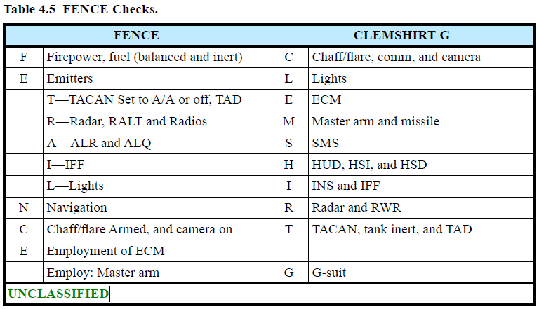
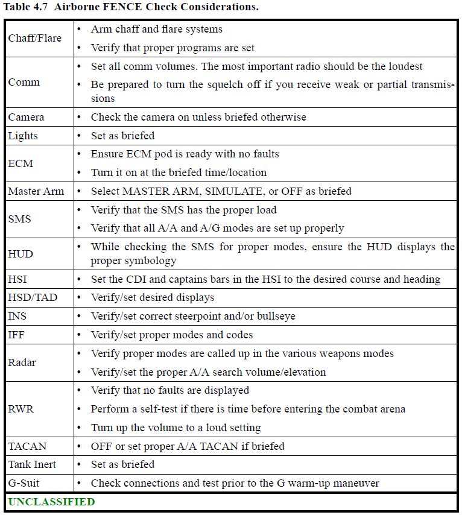

戦闘時#
- ARM (SAFE/HOT): 兵装スイッチを SAFE/ARM する指示、命令
- ARMED (SAFE/HOT): 兵装スイッチの SAFE/ARM の確認
- SAFE/HOT: 兵装スイッチを SAFE/HOT にする、もしくは SAFE/HOT である
- FENCE IN/OUT: コックピットのスイッチ類を戦闘地域突入/離脱に適した状態にする


- COUNTDOWN: あと__秒で攻撃を開始する
- ENGAGE: 指示された目標に対する兵装の使用許可命令
- ENGAGED: デコンフリクションレスポンシビリティーを果たすために目視圏内で機動するフライト内のインフォメーティブコール
- CEACE ENGAGEMENT: 空戦において交戦を中断し、他の目標との接敵に備えること。飛翔中のミサイルは追跡を継続
- CHEASE FIRE: 交戦/攻撃中止。ミサイルが飛翔中であれば迎撃を完了させる。目標の追跡は継続
- HOLD FIRE: 攻撃開始しない、または攻撃停止。飛翔中のミサイルは破壊しなければならない。この指示は通信の最後で繰り返されるべき
- COMMIT(TED) (BULLSEYE position): BOGEY(S)/BANDIT(S) に対して迎撃を行うディスクリプティブ/ディレクティブコール
- COVER: 必要であれば編隊を支援できる位置で脅威となる目標と交戦せよ、というディレクティブ/インフォメーティブコール
- I GO (__): __分後にパトロール任務から離れる
- I STAY (__): __時間、パトロール/任務を継続する
- SUPPORTING: コールしているユニット/エレメントが支援任務についている/結果に影響を与える立場にある/デコンフリクションの責任を負う
- PRESS: 攻撃を続行せよ。支援機が支援を維持できる状態にある
- TERMINATE: 作戦全体に影響することのない、現地での交戦をやめること
- BLEMISH: Bule-on-Blue もしくは Blue-on-Neutral の状況発生の可能性を喚起する (BITTERSWEET も同様)
- ANCHOR(ED): 視界内戦闘に突入し、離脱が不可能
- BUG OUT (direction): 復帰する意図のない、交戦および任務からの離脱
- SEPARATE: ある交戦から離脱する。再突入するかは未定
- MERGED: 友軍機と目標機が目視圏内まで接近したインフォメーティブコール。レーダー反射波が重なったことを示す
-
SAM (direction): SAM または SAM 発射の視認
- "BLUE 3, SAM, right 4 o'clock"
-
KILL: 目標とした航空脅威との交戦に勝利した
- SPLASH(ED): HOSTILE の航空機を撃墜した。兵装が着弾した
- GRANDSLAM: 指示されたトラック (もしくは作戦の障害となる) のすべての航空機を撃墜した
- GREEN (direction): 脅威が存在しない方向
- "BLUE 3, GREEN North"
タクティクス#
- IN (direction): 既知の脅威へ向かって旋回する。逆は OUT
- OUT (direction): 脅威から遠ざかるように旋回する。逆は IN
- DELOUSE: 友軍機を追跡している正体不明機を探知し、必要であれば交戦する
- PUMP: Grinde タクティクスを開始する
- SKATE: Launch-and-Leave タクティクスを実行し、Desired Out Range (DOR) または Minimum Out Range (MOD) までに OUT するインフォメーティブ/ディレクティブコール
- SHORT SKATE: Launch-and-Leave タクティクスを実行し、Minimum Abort Range (MAR) または Decision Range (DR) までに OUT するインフォメーティブ/ディレクティブコール
- BANZAI: Launch-and-Dicide タクティクスを実行するインフォメーティブ/ディレクティブコール
- TARGET: ターゲティングレスポンシビリティーの割り当て
- TARGETED (-): グループのレスポンシビリティーを満たした
- SORT: グループ内の割り振り。目視/レーダー/データリンクを基準として行う
- SORTED: グループ内の SORT レスポンシビリティーを満たした
- SWITCH(ED): 攻撃目標を別の航空機に変える
- MILLER TIME: 対地兵装のデリバリーの完了報告。通常、最終攻撃機が事前に調整した egress plan 実行と同時にコールされる
空対空#
- SWITCH(ED): 攻撃目標を別の航空機に変える
- OUT (direction): 脅威から遠ざかるように旋回する。逆は IN
空対地#
- ALTERNATE: 代替目標を攻撃する
- SLIP: 攻撃役がオルタネート TOT で攻撃する
- ATTACKING: ある地上目標に対する対地攻撃を行っている
-
POP:
- 1. 対地攻撃のための上昇を開始する
- 2. 低空で障害物を避けるために最大上昇するディレクティブコール
-
THUNDER: 対地兵装着弾1分前であるインフォメーティブコール
- OCCUPIED: 目標タスクの位置に地上装備がある。逆は VACANT
- VACANT: 目標タスクの位置に地上装備がない。逆は OCCUPIED
- ZOOM (IN/OUT): 目標の詳細を把握するためにズームイン/アウトする
CAS#
- ABORT (ABORT CODE) ABORT (ABORT CODE) ABORT (ABORT CODE): FAC がパイロットに対して action/attack/event/mission を中止させる強制的な指示
- ABORTING(ED): action/attack/event/mission を中止する
- ATTACK COMPLETE: 攻撃機が Type3 の CAS 管制において攻撃が完了した旨を FAC に知らせる
- DETAILS: 9-line/15-line の詳細なブリーフを要求する
- SHOPPING: FAC/C2 プラットフォームに対するターゲティングの要求
- BUDDY (LASE/GUIDE): 他の航空機からのソースをもとに兵器を誘導する
- IN (direction): 対地攻撃のターミナルフェーズに入る。逆は OFF
- IN HOT/DRY: 航空機が最終攻撃進入に入ったことを示し、兵装を使用するなら HOT、模擬進入なら DRY をコールする
- OFF (direction): 攻撃が終了し、後述の方向へ退避する
-
COME OFF (direction/instruction): 指定された方向へ機動、または指示を実行する
- "COME OFF DRY"
-
HOT: 対地攻撃で兵装の投下許可/投下完了。IN/OFF コールのあとに行う
- CAPTURED: 地上目標を認識し、機上センサーで追跡可能である
- CHECK CAPTURE: 目標がターゲティングポッドで追跡できていないことを知らせる、FAC からパイロットに対するインフォメーティブコール
- CHECK FOCUS: FLIR 映像が照準できていないことを知らせる、FAC からパイロットに対するインフォメーティブコール
- SWITCH FIELD OF VIEW: FOV を狭域か広域に切り替える
- SWITCH POLARITY: FLIR の偏光を切り替えるよう、FMV オペレーターからパイロットに対するリクエスト
- SWITCH SENSOR: CCD TV と FLIR IR を切り替えるよう、FMV オペレーターからパイロットに対するリクエスト
- SET __: その後のアップデートのために目標指示ポッドのスルーを停止する、パイロットから FMV オペレーターへのインフォメーティブコール
- CLEARED HOT: Type1 および Type2 航空支援管制において、現在のパスでの兵装の投下の許可。射爆場では Range Control Officer もしくは Range Safety Officer が兵装の投下を許可する
- CONTINUE DRY: 現在の機動を継続するが兵装の投下は許可されない
LASER#
- DEADEYE: レーザー照射装置が非稼働であるインフォメーティブコール
- TEN SECONDS: 10秒後にレーザー照射をコールするので準備せよ、というパイロットから JTAC に対するディレクティブコール
- SHIFT (direction): laser/IR/radar/device エネルギーを移動させる
- LASER ON: レーザー照射の開始
- LASING: コールした者がレーザーを照射中
-
SPOT:
- 1. レーザー照射を捉える
- 2. Laser Spot Track (LST) ができるプラットフォーム
-
NEGATIVE LASER: 航空機がレーザーを捕捉できない
- CEASE LASER: レーザー照射をやめさせる、航空機間のディレクティブコール。逆は LASER ON
- TERMINATE: 目標へのレーザー照射を止める
- DECLUTTER: 目標地域の視認性確保のためにレーザーなどの照準装置の使用をやめさせる、FAC からパイロットに対するリクエスト
Illuminator#
- BURN: EO/IR イルミネーターである地点を示すこと
- MOVE BURN (bearing): 後述の方向に EO/IR 照射を移動する
- FREEZE BURN: 現在位置で EO/IR イルミネーターを保持する
- DIAMONDS (w/position): IR でポイントしている地点
-
MATCH SPARKLE: オーバーレイ IR ポイント
-
SPARKLE:
- 1. IR ポインターで目標をマークする
- 2. ヘリもしくは航空機の FAC が焼夷弾を使って目標をマークする
- 3. IR ポインターを装備したプラットフォーム
-
STOP:
- 1. 目標への IR 照射をやめる
- 2. (BURN) 目標への IR/EO 照射をやめさせるディレクティブコール
-
ROPE: 航空機を IR ポインターを回すように照射する。支援機がその友軍の地上位置を発見できるようにするため
- SNAKE: IR ポインターを目標のそばで揺らす
- STEADY: IR ポインターを揺らすのをやめる
- SUNSHINE: 地上目標に照明を照射する
- PULSE: 敵の位置を光源で照射する
- FLASHLIGHT: ヘリコプターにIRフラッドライトを点灯させるディレクティブコール (エスコート機が目視確認できるよう地面に向けて点灯)
兵装/燃料#
- SHOTGUN: 事前ブリーフした兵装の状態
- TIGER: 任務を行うだけの十分な燃料と武装がある
- WINCHESTER: 兵装の残弾が無い航空機
- SKOSH: アクティブレーダー誘導ミサイル残弾無し/撃てない
- ARIZONA: 対レーダーミサイル残弾無し
-
WEAPONS ----__: 搭載している武装の残弾数を報告する。アクティブレーダー誘導ミサイル、セミアクティブレーダー誘導ミサイル、赤外線誘導ミサイル、機関砲残弾数、チャフフレアの順番。機関砲の報告は以下の要領で行う。
- PLUS 機関砲を搭載しており、攻撃に必要な弾薬を十分に搭載している
- MINUS 機関砲を搭載しているが、十分な弾薬が無い
- ZERO 機関砲を搭載していない
-
WHAT STATE: 残燃料とミサイルの残弾数をリクエストする。返答は以下の要領で行う。酸素残量は尋ねられた場合、もしくは極めて少ない場合に報告する
- (1st Number) アクティブレーダー誘導ミサイルの数
- (2nd Number) セミアクティブレーダー誘導ミサイルの数
- (3rd Number) 赤外線誘導ミサイルの数。
- (MINUS) 機関砲を搭載していない、または攻撃に必要な残弾数がない場合は "MINUS" と付け加える
- (4th Number) 燃料残量を 1000 で割った数、もしくは PLAYTIME
- "WHAT STATE" "BLUE TWO is 3-1-2 "MINUS" BY 7 POINT 5"
- JOKER: SEPARATION/BUGOUT/event termination を開始すべき、BINGO より上の残燃料量
- BINGO: 帰投に必要な最小残燃料
- BIRD: 友軍の地対空ミサイル
- BRUISER: (友軍の) 空対艦ミサイル
- BULLDOG: (友軍の) 地対艦ミサイル/潜水艦発射対艦ミサイル
- GRAYHOUND: TLAM などの友軍の対地巡航ミサイル
- QUAIL: 敵の空中/地上発射型巡航ミサイル
- SCUD: 脅威である TBM (戦域弾道ミサイル)
- VAMPIRE: HOSTILE の対艦ミサイル
発射時/特定の状況でのコール#
-
BIF: Bomb In Face. 防御機動のために爆弾を投棄するインフォメーティブ/ディレクティブコール
- "Blue lead, BIF"
-
TRACKING:
- 1. 機関砲の照準が定まっている
- 2. 継続的な目標照準
-
(weapon) AWAY: 前述の兵装を投下/発射する
- GUNS: 空対空もしくは空対地での機関砲発射
- SCHELEM: 疑似的にハイオフボアサイト赤外線誘導ミサイルを発射する。KILL 判定はできない
-
FOX (NUMBER): 模擬的もしくは実際に空対空ミサイルを発射する
- ONE セミアクティブレーダー誘導ミサイル
- TWO 赤外線誘導ミサイル
- THREE アクティブレーダー誘導ミサイル
-
FOX THREE CLOSE/MEDIUM/LONG: 発射/撃墜の通信で用いるブレビティ
- FOX THREE/TWO (X) SHIP: (X) 機のそれぞれの目標に対してミサイルを発射する。1機につき1発
- SECOND FOX THREE: 同じ目標に対して模擬的もしくは実際に空対空ミサイルを複数発射する
- MADDOG: 目視圏内で AIM-120 を発射する
- CHEAPSHOT: 高PRFでのアクティブ誘導ミサイルの誘導。中域PRFは非作動
- HUSKY: アクティブレーダー誘導ミサイルが高PRFで誘導を行う
- PITBULL: アクティブレーダー誘導ミサイルが中PRFで誘導を行う
- MAGNUM: (H)ARM を発射する
- LONG RIFLE: (BULLSEYE フォーマットでの発射位置とミサイルの飛翔方向も併せて報告) AGM-130 や SLAM-ER などの友軍の長距離空対地ミサイルを発射する
- PIGS: (BULLSEYE フォーマットでの発射位置とミサイルの飛翔方向も併せて報告) JSOW などの友軍の滑空兵器
- RIFLE: AGM-65 マーベリック/対地ミサイルを発射する
- RIPPLE: 2発以上の爆弾を短い間隔で投下する
- SLAPSHOT (type/bearing): 距離が不明な、ある方位の特定の脅威に対して HARM を発射する
- SNIPER: 距離が判明している、ある方位の特定の脅威に対して HARM を発射する
- TRASHED: ミサイルをかわされた
最終更新日: